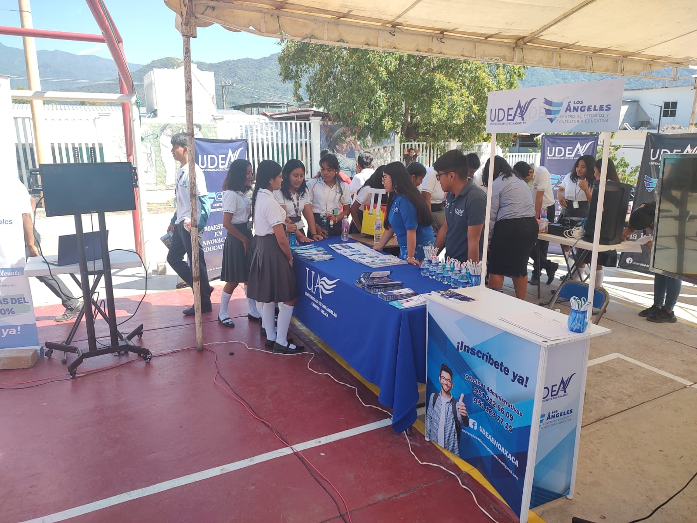
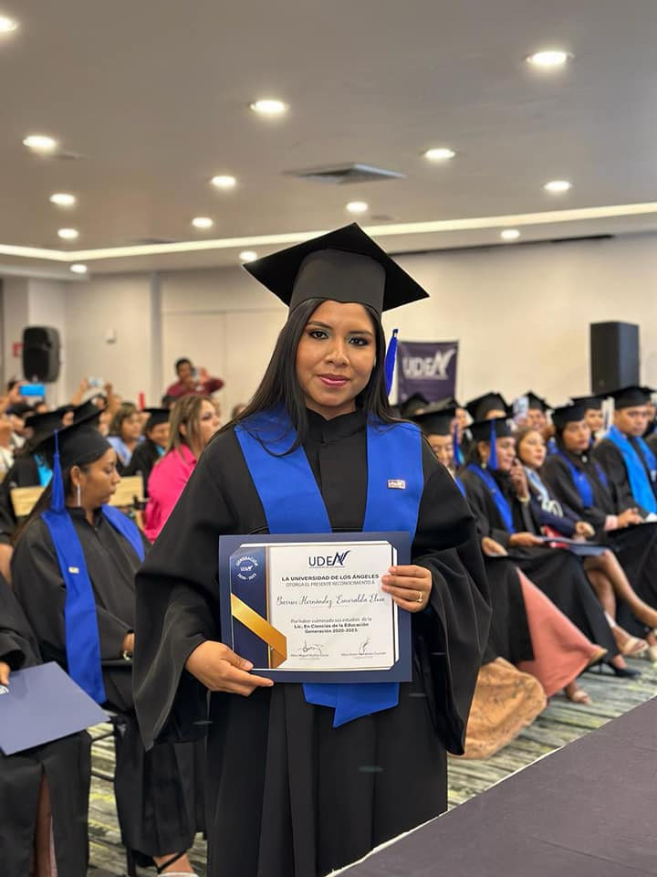
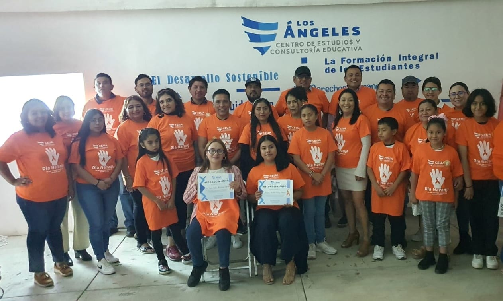

¡BACHILLERATO EN 18 MESES!
En nuestra modalidad semipresencial o 100% en línea puedes cumplir con la meta de seguir estudiando y trabajando al mismo tiempo y concluir tus estudios en el nivel medio superior


Llevar educación de calidad a cada rincon del estado.
Un modelo diferente al de las universidades tradicionales. SISTEMA HIBRIDO, SEMIPRESENIAL O 100% EN LÍNEA. ¡Nos adaptamos a tus necesidades!
Con el objetivo de potenciar el desarrollo de cada uno de nuestros estudiantes estamos comprometidos con la enseñanza, la investigación y promoción del desarrollo.¡Más de 8 sedes al rededor de estado!
En nuestra modalidad semipresencial o 100% en línea puedes cumplir con la meta de seguir estudiando y trabajando al mismo tiempo y concluir tus estudios en el nivel medio superior
Con un modelo educativo basado en competencias, buscamos que cada uno de nuestros estudiantes construyan su propio onocimiento y logren sus metas a nivel profecional ofrecemos las siguientes licenciaturas con TUTULACIÓN POR PROMEDIO, PROYECTO O TESIS.
Buscando la mejora y especialización de nuestros profecionistas ofrecemos las siguientes maestrías en ¡18 MESES! Con TITULACIÓN POR PROYECTO O TESIS.
Fortaleciendo el desarrollo integral de nuestros estudiantes para que contru¿ibuyan a la mejora en su calidad de vida, su entorno social y familiar, ofrecemos doctorado en:
Ofrecemos especialización en el área administrativa y empresarial, con el
Con el fin de brindar mayores oportunidades a cada región del estado contamos con las siguientes sedes:
La Licenciatura en Ciencias de la Educación te brindará los conocimientos teórico-prácticos necesarios para desarrollar procesos y ambientes formativos que promuevan el desarrollo de competencias con alternativas innovadoras para solucionar problemas de cualquier nivel académico.

Un Licenciado en Contaduría y Finanzas es un profesionista con habilidades para crear estrategias financieras para empresas, así como analizar riesgos y oportunidades de inversión, optimizar el rendimiento de sus clientes, y realizar la gestión fiscal de instituciones públicas.
esarrollarás la habilidad para analizar y participar en juicios orales, apoyándote en bases conceptuales y prácticas. Serás capaz de aplicar las principales herramientas en el litigio, conforme al sistema de enjuiciamiento penal acusatorio en la investigación.
Les brindaremos los conocimientos necesaros para que sean capaces de detectar factores de riesgo que inciden en la delincuencia, proponen políticas públicas para la seguridad y promueven acciones que preserven la paz y el orden público, a través del estudio de las leyes vigentes y su correcta aplicación.

es la carrea que forma especialistas en los ámbitos de investigación cultural, políticas culturales, educación artística, comunicación y medios, espacios culturales y emprendimiento cultural.